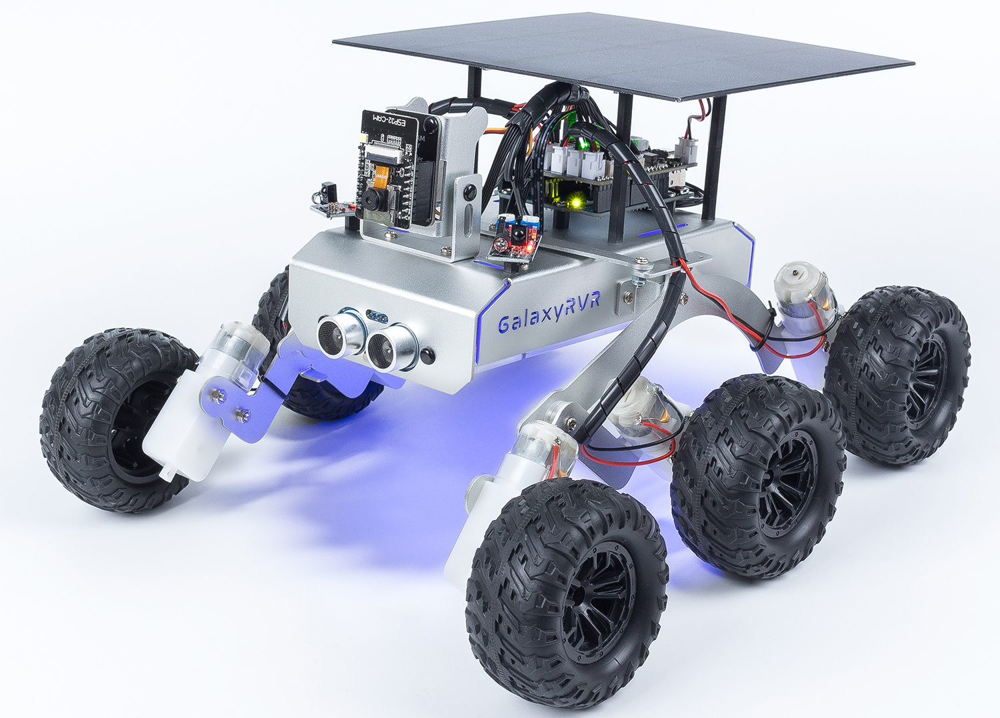

Note
Hello, welcome to the SunFounder Raspberry Pi & Arduino & ESP32 Enthusiasts Community on Facebook! Dive deeper into Raspberry Pi, Arduino, and ESP32 with fellow enthusiasts.
Why Join?
Expert Support: Solve post-sale issues and technical challenges with help from our community and team.
Learn & Share: Exchange tips and tutorials to enhance your skills.
Exclusive Previews: Get early access to new product announcements and sneak peeks.
Special Discounts: Enjoy exclusive discounts on our newest products.
Festive Promotions and Giveaways: Take part in giveaways and holiday promotions.
👉 Ready to explore and create with us? Click [here] and join today!
GalaxyRVR - SunFounder Mars Rover Kit
Thanks for choosing our GalaxyRVR.
Note
This document is available in the following languages.
Please click on the respective links to access the document in your preferred language.
Imagine piloting a rover on the desolate terrain of Mars, exploring alien landscapes and confronting the unknown. Sounds like a dream for NASA engineers, right?
Not anymore.
Welcome to GalaxyRVR, a Mars Rover kit from SunFounder, bringing interplanetary exploration into your living room.
{kind=link}

Built on NASA’s rocker-bogie system, GalaxyRVR can traverse rocky mountains, sandy beaches, and grassy fields with smooth mobility, making Mars feel like home.
Equipped with a high-definition camera, GalaxyRVR provides a first-person view for an immersive piloting experience. Its advanced obstacle avoidance and ultrasonic modules ensure it can dodge obstacles autonomously.
Choose your path based on your interests and skill level:
Quick Start: Get started right away by controlling the GalaxyRVR with the RoboPilot App, or quickly run example codes in Arduino IDE and Mammoth Coding — ideal for beginners who want fast, hands-on control.
Programming with Arduino IDE: Delve deeper into the code, understand each function, and customize the GalaxyRVR with Arduino programming. Ideal for those seeking in-depth knowledge and experimentation.
Programming with Scratch: Use Scratch to program the GalaxyRVR. A visual and block-based language perfect for beginners and those new to coding.
- About this Kit
- Assemble
- Update Firmwares
- Quick Start
- Programming with Arduino IDE
- Lesson 1 Unveiling the Mars Rover
- Lesson 2 Understanding and Making Rocker-Bogie System
- Lesson 3: Entering the World of Arduino and Coding
- Lesson 4: Mastering the TT Motor
- Lesson 5: Unleashing Mars Rover Mobility
- Lesson 6: Exploring the Obstacle Avoidance Module
- Lesson 7: Enhancing Rover Navigation with Ultrasonic Module
- Lesson 8: Advanced Obstacle Avoidance and Intelligent Following System
- Lesson 9: Lighting the Way with RGB LED Strips
- Lesson 10: Exploring the Mars Rover Visual System - Servo and Tilt Mechanism
- Lesson 11: Exploring the Mars Rover Visual System - Camera and Real-time Control
- Lesson 12: Investigating the Mars Rover Energy System
- Programming with Scratch
- Lesson 1 Unveiling the Mars Rover
- Lesson 2 Getting Started with the Mammoth Coding App
- Lesson 3: Remote Control Your GalaxyRVR
- Lesson 4: Ultrasonic Module
- Lesson 5 Interactive Animation
- Lesson 6 IR Obstacle
- Lesson 7: Create an IR Obstacle Animation
- Lesson 8 Advanced Obstacle Avoidance
- Lesson 9: Mars Exploration Partner
- Lesson 10: Lighting the Way with RGB LED Strips
- Lesson 11: Control Your Rover’s Camera Tilt
- Lesson 12: See Through Your Rover’s Eyes
- Lesson 13: Complete Mars Rover Control
- Fun1 Inflating the Balloon
- Fun2 Flappy Parrot
- Fun3 Shooting
- Fun4 Eat Apple
- Fun5 Fishing
- Fun6 Distance Sensitive Ball
- Fun7 Tap on The Black Tile
- Hardware
- FAQ
- 1. Unable to Connect to GalaxyRVR?
- 2. Compilation error:
SoftPWM.horSunFounder_AI_Camera.h: No such file or directory？ - 3. avrdude: stk500_getsync() attempt 10 of 10: not in sync: resp=0x6e?
- 4. How to Change Wi-Fi Channel?
- 5. How to Update Firmware for ESP32 CAM
- 6. How to Restore the R3 Firmware
- 7. How to Set Up Wi-Fi Connection
Copyright Notice
All contents including but not limited to texts, images, and code in this manual are owned by the SunFounder Company. You should only use it for personal study,investigation, enjoyment, or other non-commercial or nonprofit purposes, under therelated regulations and copyrights laws, without infringing the legal rights of the author and relevant right holders. For any individual or organization that uses these for commercial profit without permission, the Company reserves the right to take legal action.